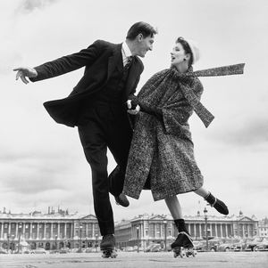
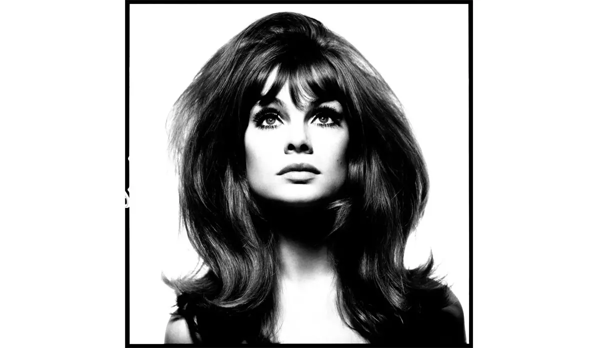
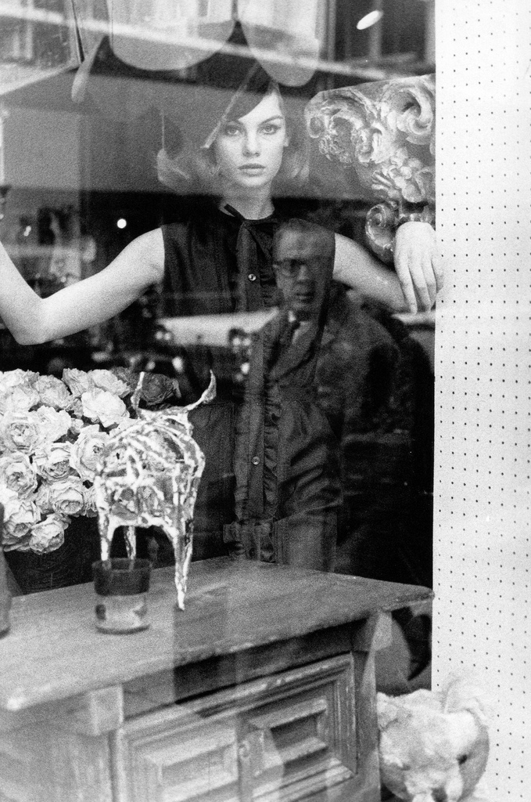
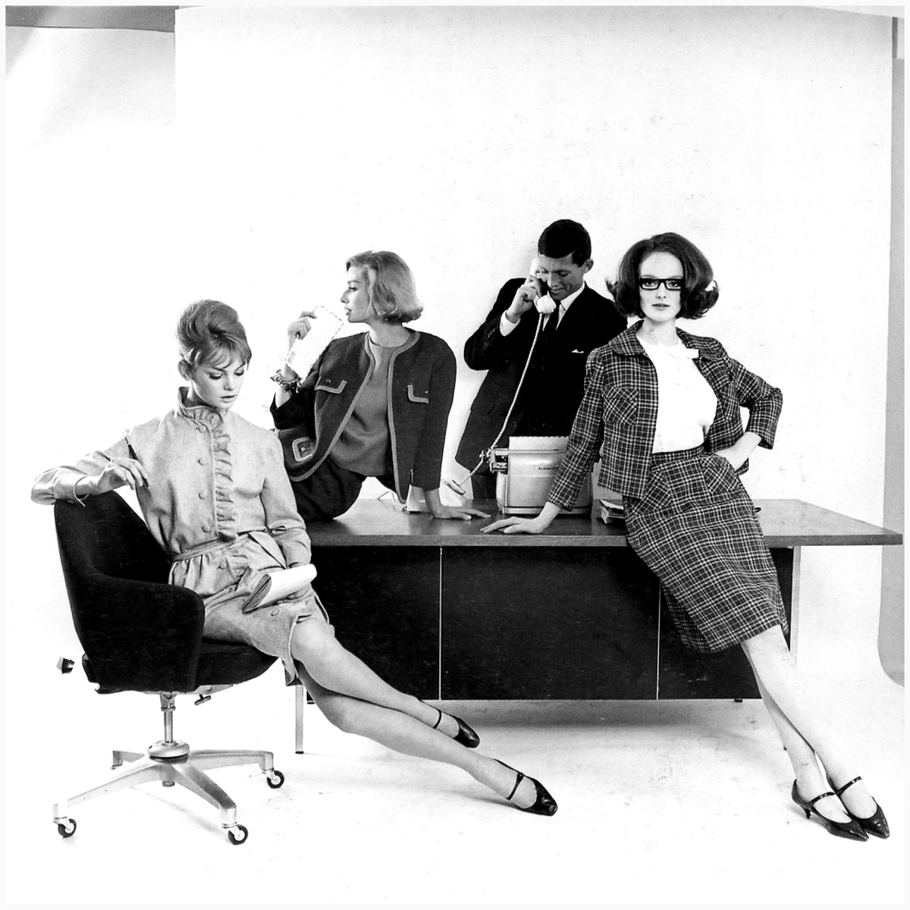
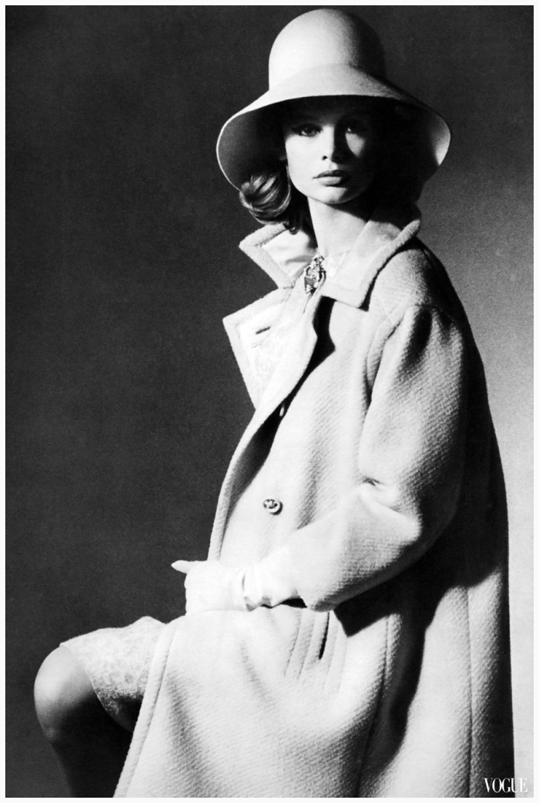
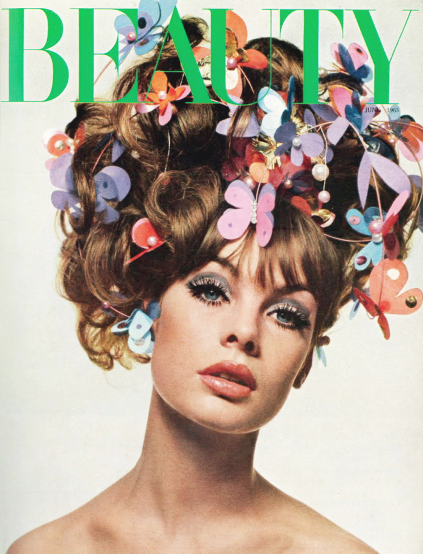
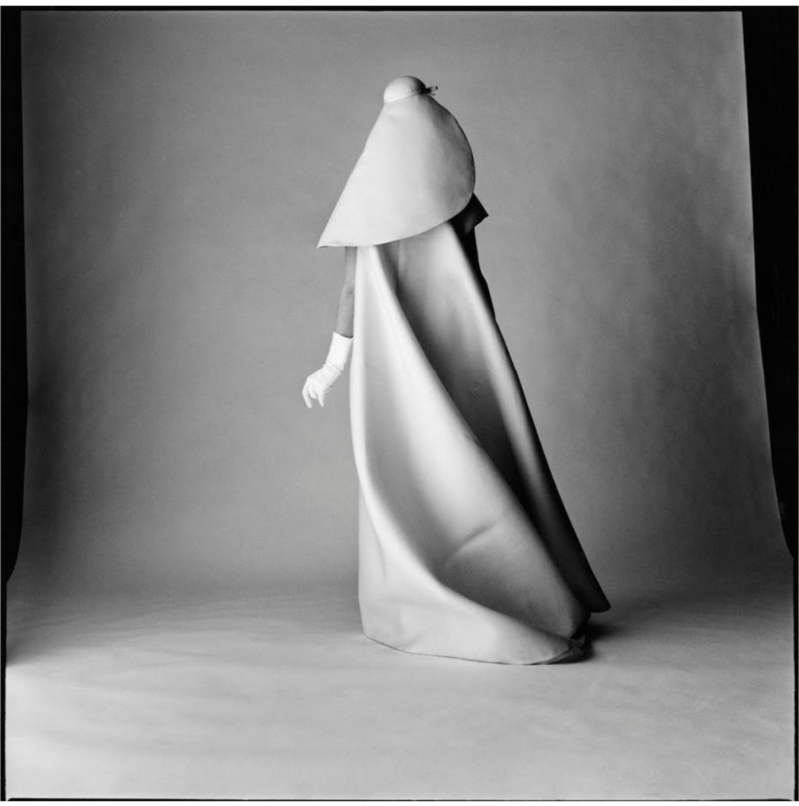
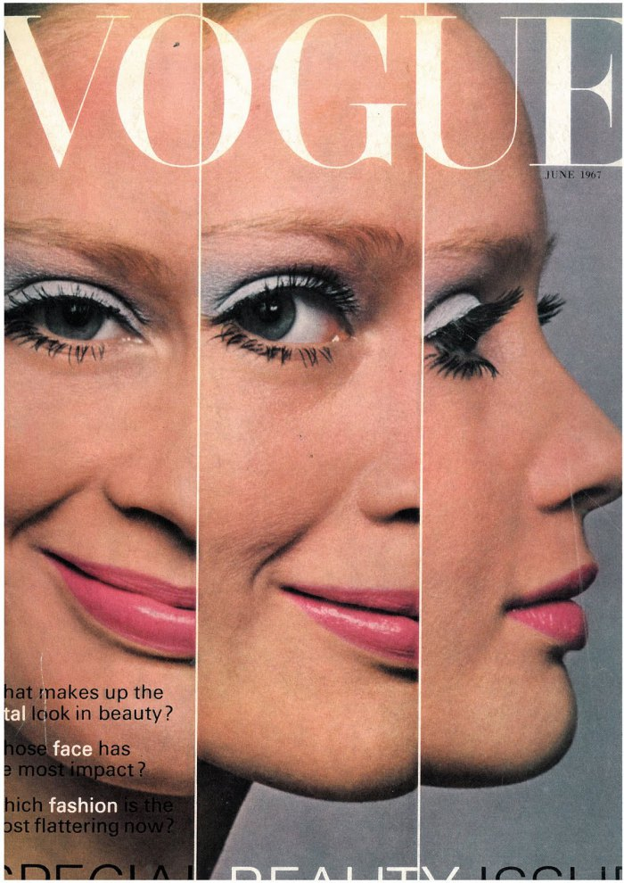
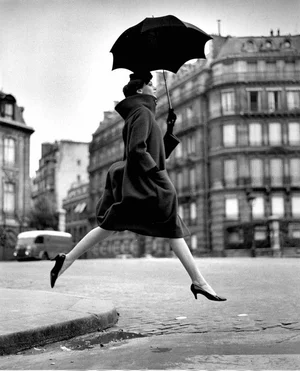
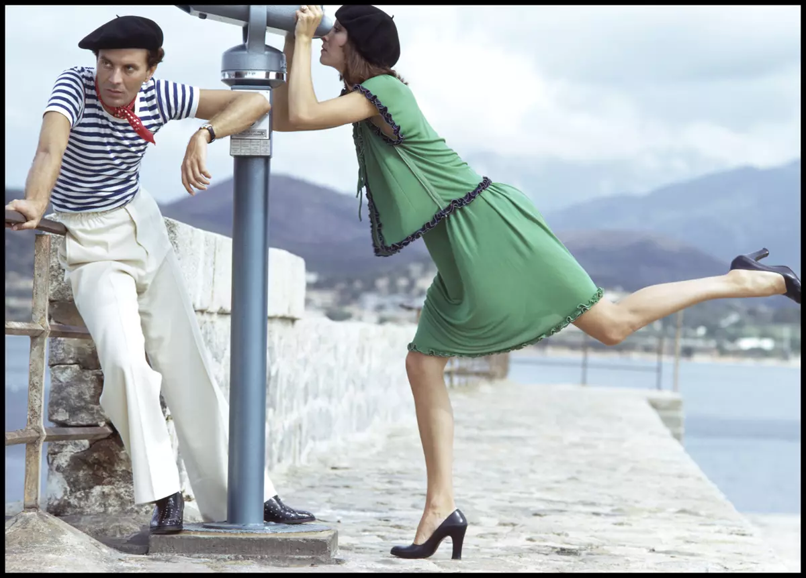

La narrativa en moda
1960–1979
La moda comenzó a contar historias, transformando las imágenes en experiencias narrativas capaces de transmitir emociones y estilos de vida.
Puntos clave
- La cultura juvenil sustituyó a la alta sociedad como principal referente estético.
- La fotografía abandonó progresivamente el estudio para incorporar escenarios reales y cotidianos.
- El movimiento, la espontaneidad y la naturalidad reemplazaron a las poses rígidas y formales.
- La moda pasó de comunicar estatus a expresar identidad, personalidad y valores.
- El estilismo editorial comenzó a consolidarse como una disciplina creativa especializada.
- Las editoriales evolucionaron de colecciones de imágenes independientes a relatos visuales coherentes.
Referentes
- Richard Avedon: revolucionó la imagen de moda al incorporar movimiento, emoción y narrativa a sus producciones.
- David Bailey: impulsó una visión más cercana y contemporánea de la moda, acercándola a la cultura popular y a una nueva generación de consumidores.
- Estilista editorial: consolidación de esta figura profesional como un narrador visual.
Galería










